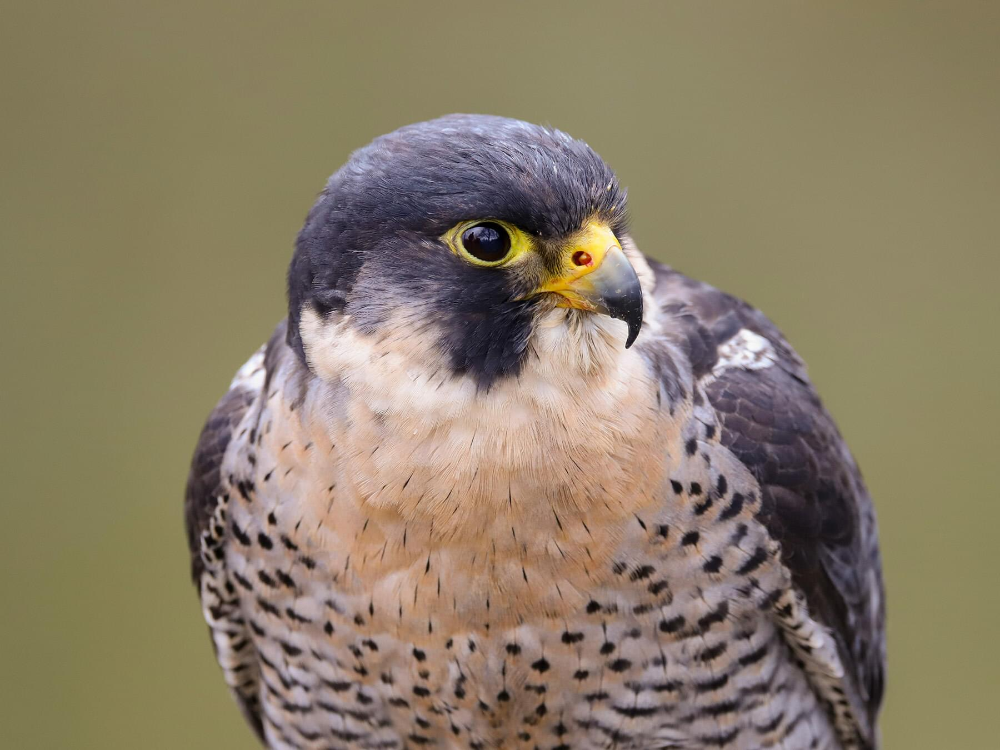
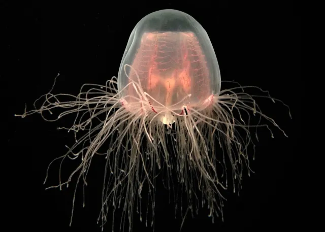
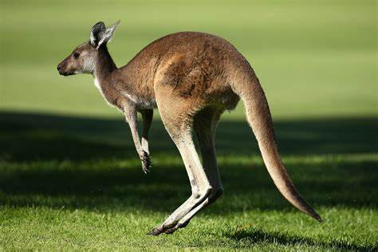
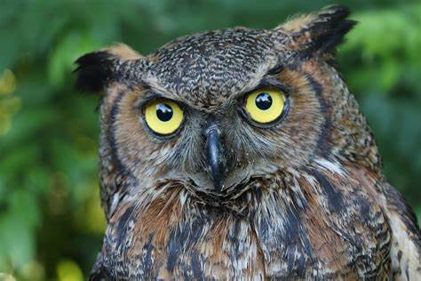
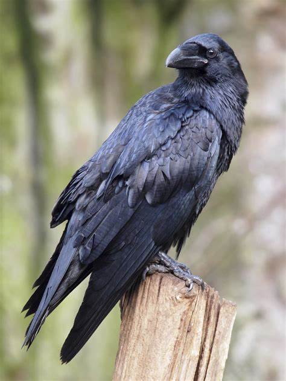
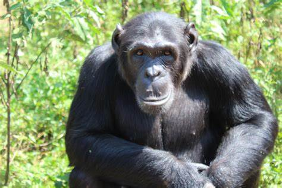
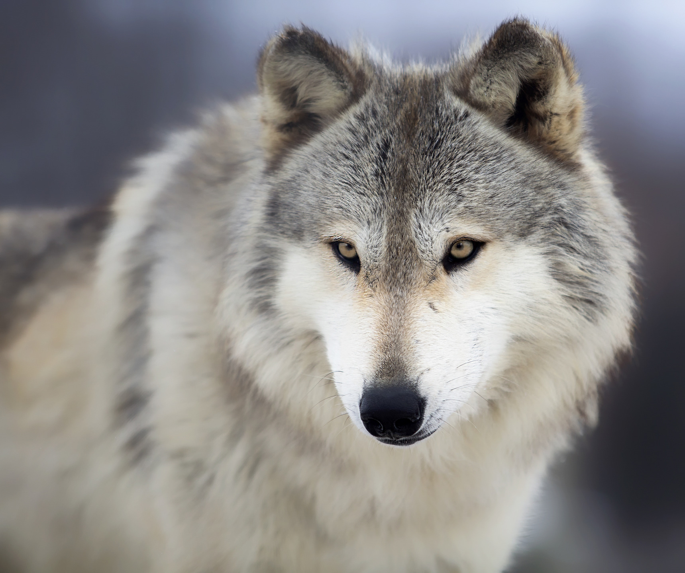
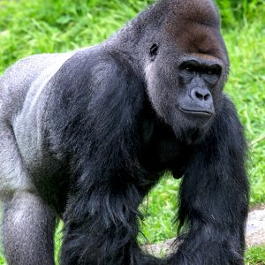
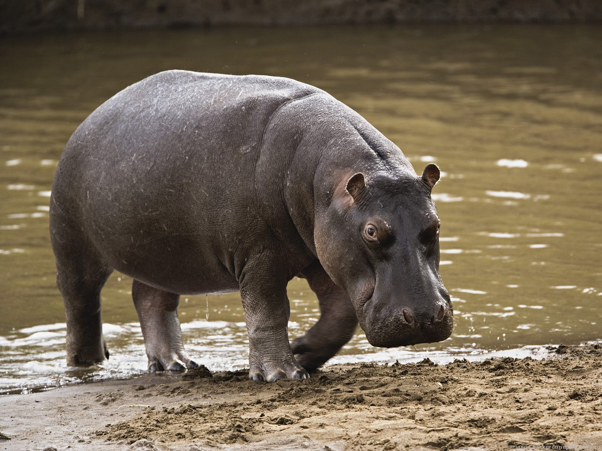

Animals and Relation with Humans.

- Name: Peregrine Falcon
- Type: Wild
-
Relation with humans: For many years, gamekeepers persecuted peregrines because
of their liking for grouse, and their eggs have been prized by collectors. During the Second
World War people were encouraged to shoot peregrines in case they caught homing pigeons
which were carrying messages.

- Name: Eagle
- Type: Wild
-
Relation with humans: Humans are both competitors and predators of golden eagles, competing
for the same food sources and preying upon the eagles for plumage, ornaments, and dominance of resources.
Eagle-human interactions have been documented going back at least 130,000 years to Neanderthal deposits
from caves in europe

Relation with human: The immortal jellyfish has been sequenced by researchers at the University of Oviedo
in northern Spain, revealing the keys to their biological immortality. The jellyfish shares more genetic data with
humans than they do with insects or worms, which means that understanding how they're able to reverse the aging process
could be applied to humans. The jellyfish's genome may bring us closer to spectacular advances in human medicine,
prolonging life by addressing some of the most unbeatable forms of disease that shorten it, like cancer. The immortal
jellyfish had mutations that allowed it to limit cell division and prevent telomeres from breaking down, and had two
times the number of genes linked to DNA repair and protection.

- Name: Kangaroo
- Type: Wild
-
Relation with humans: Humans and kangaroos are close cousins on the evolutionary tree sharing a common ancestor
150 million years ago1. Humans have long used kangaroos for food, clothing, and some types of shelter. Due to their
increasing numbers, kangaroos can be viewed as pests, particularly by farmers when kangaroos compete for grazing land.

- Name: Owl
- Type: Wild
-
Relation with humans: Owls are generally not aggressive towards humans and prefer to avoid contact with them.
They tend to avoid human interaction and prefer to hunt small prey such as rodents and birds. Owls are noted for their
solitary and elusive nature, preferring to hunt small prey like rodents and birds. Usually, owls and humans coexist peacefully,
preferring to avoid conflict by leaving each other alone. However, with proper training and socialization, some owls can become
comfortable around humans and even form strong bonds with them.

- Name: Raven
- Type: Wild
-
Relation with humans: Ravens and humans have shared a special relationship for at least 30,000 years, according to a new study.
Researchers have discovered that ravens and humans interacted significantly more than 30,000 years ago, suggesting that ravens fed on human
hunters mammoth scraps and possibly served as a supplementary food source. Wild animals entered into diverse relationships with humans long
before the first settlements were established in the Neolithic period around 10,000 years ago.

- Name: Chimpanzee
- Type: Wild
-
Relation with human The relationship between chimpanzees and humans is that they are closely related species that share a common ancestor.
Humans, chimpanzees, and other apes form a family of organisms known as the Hominidae. Humans and chimpanzees diverged from a single ancestor species
that lived six or seven million years ago. Their DNA is very similar, but has changed over time due to evolution. Some researchers argue that
chimpanzees should be included in the human branch of the tree of life.

- Name: Wolf
- Type: Wild
-
Relation with humans: Wolves and humans have a reciprocal relationship that blossomed into one of the closest bonds between two species that has
ever existed. Early humans first encountered wolves after moving into Eurasia about 40,000 years ago. Over time, these wolves became more and more
accustomed to humans until eventually new selection pressures changed them from wolves to dogs. Both wolves and humans brought unique, complementary
talents to a relationship that was based on mutual respect3. Several scholars agree that humans learned to hunt from wolves.

- Name: Gorilla
- Type: Wild
-
Relation with humans: Humans and gorillas are very closely related, sharing 95-99% of their DNA. They belong to the same family of great apes, called Hominidae,
and have a common ancestor that lived about 10 million years ago. However, humans are not equally related to all gorillas, as some parts of the human genome are closer
to chimpanzees, while others are closer to gorillas.

- Name: Hippopotamus
- Type: Wild
-
Relation with humans: Hippos do not eat humans, as they are primarily plant-eating animals. However, humans have hunted hippos as a source of meat and bones for
making tools. Hippopotamus meat has been an important human food source since the dawn of Homo erectus.
Click the link below for more details
More info on Animals